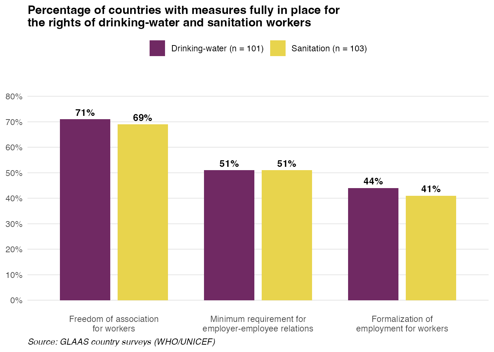
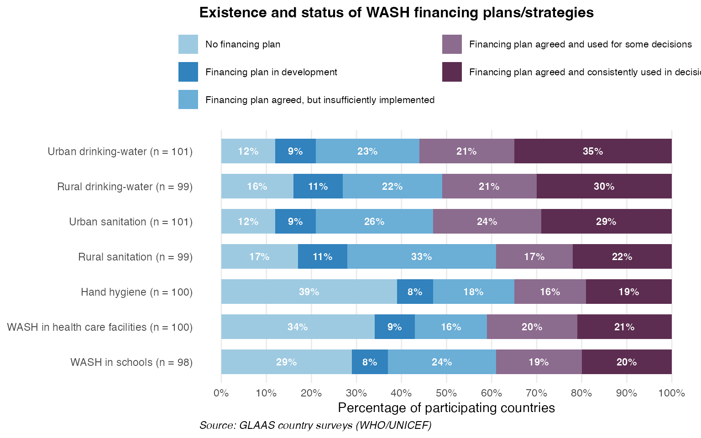
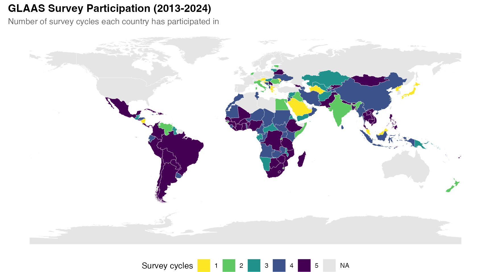
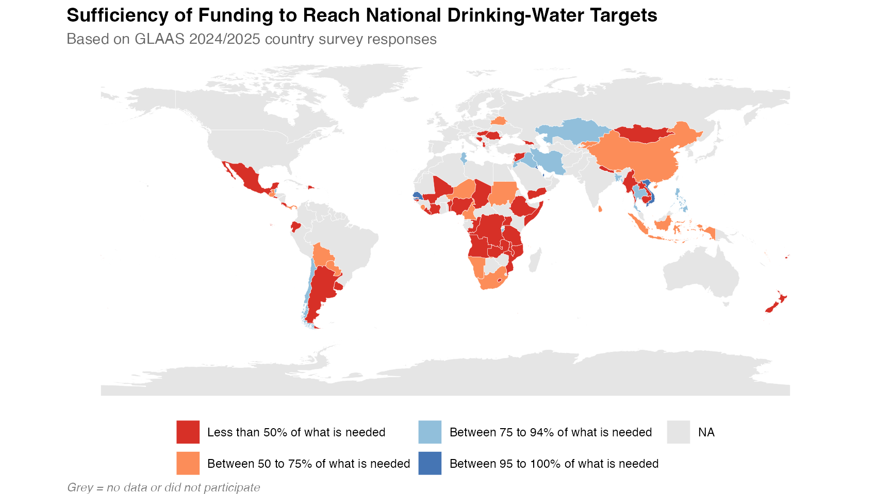
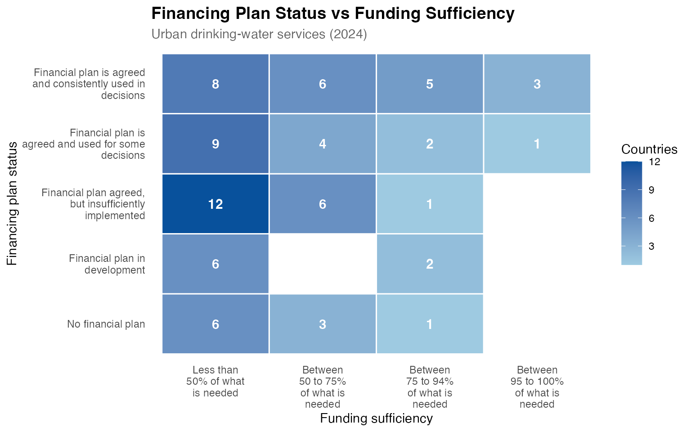

Installation
You can install glaas from GitHub:
# install.packages("devtools")
devtools::install_github("openwashdata/glaas")Loading the data
library(glaas)
library(dplyr)
library(tidyr)
library(ggplot2)
library(stringr)
library(rnaturalearth)
library(sf)A note on lazy loading
The full dataset is available directly after loading the
glass. No need to call data("glaas")! This
package uses lazy
loading, which means the dataset is only loaded into memory when you
actually use it. This keeps the package lightweight.
What is GLAAS?
The glaas dataset contains data from the UN-Water Global
Analysis and Assessment of Sanitation and Drinking-water survey, in
short GLAAS.
What GLAAS does:
- Collects data from countries and external support agencies on WASH policies, institutions, financing, monitoring systems and human resources.
- Produces global reports every two to three years that show how strong countries’ WASH systems are and where gaps in investment or governance remain.
- Provides a public data portal with structured indicators so policymakers can access and use evidence on WASH systems performance.
The dataset includes 259313 rows and 121 variables covering the survey cycles from 2013-2024.
For a complete description of all variables, see
?glaas.
Exploring the data
First and foremost, the main goal of glaas is to make
the data accessible for WASH practitioners, researchers, and other end
users. With this package you can reproduce analyses and visualizations
without the need for extensive data wrangling. To illustrate this, we
have reproduced two graphics from the most recent report, “State
of systems for drinking-water, sanitation and hygiene - Global update
2025”, using glaas.
Worker rights indicators
This example recreates Figure 5.6 from the GLAAS 2024/2025 report, showing the percentage of countries with measures fully in place for the rights of drinking-water and sanitation workers.
# Filter for worker rights indicators from 2024 survey
worker_rights <- glaas |>
filter(
indicator_name %in% c(
"[HRS44] Freedom of association for workers",
"[HRS38] Minimum requirements for employer-employee relations",
"[HRS39] Formalization of employment for workers"
),
time_period == 2024,
!is.na(value_text),
value_text != "No response"
) |>
group_by(indicator_name, dimension1_value_name) |>
summarise(
n_countries = n_distinct(country_name),
n_fully = sum(value_text == "Measure fully in place"),
pct = round(100 * n_fully / n_countries),
.groups = "drop"
) |>
mutate(
measure = case_when(
grepl("Freedom", indicator_name) ~ "Freedom of association\nfor workers",
grepl("Minimum", indicator_name) ~ "Minimum requirement for\nemployer-employee relations",
grepl("Formalization", indicator_name) ~ "Formalization of\nemployment for workers"
),
measure = factor(measure, levels = c(
"Freedom of association\nfor workers",
"Minimum requirement for\nemployer-employee relations",
"Formalization of\nemployment for workers"
)),
label = paste0(dimension1_value_name, " (n = ", n_countries, ")")
)
# Create the plot
ggplot(worker_rights, aes(x = measure, y = pct, fill = dimension1_value_name)) +
geom_col(position = position_dodge(width = 0.8), width = 0.7) +
geom_text(
aes(label = paste0(pct, "%")),
position = position_dodge(width = 0.8),
vjust = -0.5,
size = 3.5,
fontface = "bold"
) +
scale_fill_manual(
values = c("Drinking-water" = "#702963", "Sanitation" = "#E8D44D"),
labels = function(x) {
n_vals <- worker_rights |>
filter(measure == levels(worker_rights$measure)[1]) |>
arrange(dimension1_value_name)
paste0(x, " (n = ", n_vals$n_countries, ")")
}
) +
scale_y_continuous(
limits = c(0, 85),
breaks = seq(0, 80, 10),
labels = function(x) paste0(x, "%")
) +
labs(
title = "Percentage of countries with measures fully in place for\nthe rights of drinking-water and sanitation workers",
x = NULL,
y = NULL,
fill = NULL,
caption = "Source: GLAAS country surveys (WHO/UNICEF)"
) +
theme_minimal(base_size = 11) +
theme(
plot.title = element_text(face = "bold", size = 12),
legend.position = "top",
panel.grid.major.x = element_blank(),
panel.grid.minor = element_blank(),
plot.caption = element_text(hjust = 0, face = "italic")
)
Note: The number of participating countries shown here may differ slightly from the published GLAAS report. Possible reasons include:
- Data timing: The package data reflects the latest export from the GLAAS portal, which may include additional country submissions received after the report was finalized.
- Filtering criteria: The report may use additional filters (e.g., only countries that completed certain sections, or excluding partial responses) that aren’t apparent from the data alone.
- “No response” handling: This example excludes “No response” entries, but the report may handle missing data differently.
WASH financing plans
This example recreates Figure 6.1 from the GLAAS 2024/2025 report, showing the existence and status of WASH financing plans/strategies across different service areas.
# Filter for financing plan status indicator from 2024 survey
financing_plans <- glaas |>
filter(
grepl("FIN01", indicator_name),
time_period == 2024,
value_text != "No response"
) |>
mutate(
category = case_when(
dimension1_value_name == "Drinking-water" & dimension2_value_name == "Urban" ~ "Urban drinking-water",
dimension1_value_name == "Drinking-water" & dimension2_value_name == "Rural" ~ "Rural drinking-water",
dimension1_value_name == "Sanitation" & dimension2_value_name == "Urban" ~ "Urban sanitation",
dimension1_value_name == "Sanitation" & dimension2_value_name == "Rural" ~ "Rural sanitation",
dimension1_value_name == "Hygiene" ~ "Hand hygiene",
dimension1_value_name == "WASH" & dimension2_value_name == "Health care facilities" ~ "WASH in health care facilities",
dimension1_value_name == "WASH" & dimension2_value_name == "Schools" ~ "WASH in schools"
)
) |>
group_by(category, value_text) |>
summarise(n = n_distinct(country_name), .groups = "drop") |>
group_by(category) |>
mutate(
total = sum(n),
pct = round(100 * n / total)
) |>
ungroup() |>
# Adjust "No financing plan" to fill up to 100%
group_by(category) |>
mutate(
pct = if_else(
value_text == "No financial plan",
100 - sum(pct[value_text != "No financial plan"]),
pct
)
) |>
ungroup() |>
mutate(
# Shorten status labels
status = case_when(
value_text == "No financial plan" ~ "No financing plan",
value_text == "Financial plan in development" ~ "Financing plan in development",
value_text == "Financial plan agreed, but insufficiently implemented" ~ "Financing plan agreed, but insufficiently implemented",
value_text == "Financial plan is agreed and used for some decisions" ~ "Financing plan agreed and used for some decisions",
value_text == "Financial plan is agreed and consistently used in decisions" ~ "Financing plan agreed and consistently used in decisions"
),
status = factor(status, levels = rev(c(
"Financing plan agreed and consistently used in decisions",
"Financing plan agreed and used for some decisions",
"Financing plan agreed, but insufficiently implemented",
"Financing plan in development",
"No financing plan"
))),
# Create label with n
category_label = paste0(category, " (n = ", total, ")"),
category_label = factor(category_label, levels = rev(c(
paste0("Urban drinking-water (n = ", unique(total[category == "Urban drinking-water"]), ")"),
paste0("Rural drinking-water (n = ", unique(total[category == "Rural drinking-water"]), ")"),
paste0("Urban sanitation (n = ", unique(total[category == "Urban sanitation"]), ")"),
paste0("Rural sanitation (n = ", unique(total[category == "Rural sanitation"]), ")"),
paste0("Hand hygiene (n = ", unique(total[category == "Hand hygiene"]), ")"),
paste0("WASH in health care facilities (n = ", unique(total[category == "WASH in health care facilities"]), ")"),
paste0("WASH in schools (n = ", unique(total[category == "WASH in schools"]), ")")
)))
)
# Create the plot
ggplot(financing_plans, aes(x = pct, y = category_label, fill = status)) +
geom_col(position = position_stack(reverse = TRUE), width = 0.7) +
geom_text(
aes(label = ifelse(pct >= 5, paste0(pct, "%"), "")),
position = position_stack(vjust = 0.5, reverse = TRUE),
size = 3,
color = "white",
fontface = "bold"
) +
scale_fill_manual(
values = c(
"No financing plan" = "#9ECAE1",
"Financing plan in development" = "#3182BD",
"Financing plan agreed, but insufficiently implemented" = "#6BAED6",
"Financing plan agreed and used for some decisions" = "#8B6B8E",
"Financing plan agreed and consistently used in decisions" = "#5C2D50"
),
guide = guide_legend(nrow = 3)
) +
scale_x_continuous(
limits = c(0, 100),
breaks = seq(0, 100, 10),
labels = function(x) paste0(x, "%")
) +
labs(
title = "Existence and status of WASH financing plans/strategies",
x = "Percentage of participating countries",
y = NULL,
fill = NULL,
caption = "Source: GLAAS country surveys (WHO/UNICEF)"
) +
theme_minimal(base_size = 11) +
theme(
plot.title = element_text(face = "bold", size = 12),
legend.position = "top",
legend.text = element_text(size = 8),
panel.grid.major.y = element_blank(),
panel.grid.minor = element_blank(),
plot.caption = element_text(hjust = 0, face = "italic")
)
Note: The same caveats regarding differences in participating countries apply to this figure as well.
Mapping GLAAS data
Another example of how you can use data from glaas is
mapping. The country_code variable (ISO 3-letter codes)
makes it easy to join GLAAS data with geographic boundaries. You can
find two example maps below.
Survey participation across cycles
This map shows how consistently countries have participated in GLAAS surveys over time. Darker colors indicate participation in more survey cycles.
# Get world map
world <- ne_countries(scale = "medium", returnclass = "sf") |>
select(iso_a3, geometry)
# Count survey cycles per country
participation <- glaas |>
group_by(country_code) |>
summarise(n_cycles = n_distinct(time_period), .groups = "drop")
# Join with map
map_data <- world |>
left_join(participation, by = c("iso_a3" = "country_code")) |>
mutate(n_cycles = factor(n_cycles, levels = 1:5))
# Create map
ggplot(map_data) +
geom_sf(aes(fill = n_cycles), color = "white", linewidth = 0.1) +
scale_fill_manual(
values = c(
"1" = "#fde725",
"2" = "#5ec962",
"3" = "#21918c",
"4" = "#3b528b",
"5" = "#440154"
),
na.value = "grey90",
name = "Survey cycles",
drop = FALSE
) +
labs(
title = "GLAAS Survey Participation (2013-2024)",
subtitle = "Number of survey cycles each country has participated in"
) +
theme_void(base_size = 11) +
theme(
plot.title = element_text(face = "bold", size = 14),
plot.subtitle = element_text(color = "grey40"),
legend.position = "bottom",
plot.caption = element_text(hjust = 0, face = "italic", color = "grey50")
) +
guides(fill = guide_legend(nrow = 1))
Funding sufficiency for drinking-water
This map visualizes the sufficiency of funding to reach national drinking-water targets, based on the 2024 GLAAS survey.
# Get funding sufficiency data for drinking-water
funding <- glaas |>
filter(
grepl("FIN12", indicator_name),
time_period == 2024,
dimension1_value_name == "Drinking-water",
value_text != "No response"
) |>
mutate(
funding_level = factor(value_text, levels = c(
"Less than 50% of what is needed",
"Between 50 to 75% of what is needed",
"Between 75 to 94% of what is needed",
"Between 95 to 100% of what is needed"
))
) |>
select(country_code, funding_level)
# Join with map
map_funding <- world |>
left_join(funding, by = c("iso_a3" = "country_code"))
# Create map
ggplot(map_funding) +
geom_sf(aes(fill = funding_level), color = "white", linewidth = 0.1) +
scale_fill_manual(
values = c(
"Less than 50% of what is needed" = "#d73027",
"Between 50 to 75% of what is needed" = "#fc8d59",
"Between 75 to 94% of what is needed" = "#91bfdb",
"Between 95 to 100% of what is needed" = "#4575b4"
),
na.value = "grey90",
name = NULL
) +
labs(
title = "Sufficiency of Funding to Reach National Drinking-Water Targets",
subtitle = "Based on GLAAS 2024/2025 country survey responses",
caption = "Grey = no data or did not participate"
) +
theme_void(base_size = 11) +
theme(
plot.title = element_text(face = "bold", size = 14),
plot.subtitle = element_text(color = "grey40"),
legend.position = "bottom",
plot.caption = element_text(hjust = 0, face = "italic", color = "grey50")
) +
guides(fill = guide_legend(nrow = 2))
Cross-indicator relationships
Finally, glaas makes it easy to look at relationships
between variables. For example, the heatmap below explores the
relationship between financing plan status and funding sufficiency for
urban drinking-water services. Do countries with more developed
financing plans tend to have better funding coverage?
# Get financing plan status and funding sufficiency per country
cross_indicators <- glaas |>
filter(
time_period == 2024,
indicator_name %in% c(
"[FIN01] Status of WASH financial plan",
"[FIN12] Sufficiency of funding to reach national target(s)"
),
dimension1_value_name == "Drinking-water",
dimension2_value_name == "Urban",
value_text != "No response"
) |>
select(country_code, indicator_name, value_text) |>
pivot_wider(names_from = indicator_name, values_from = value_text)
names(cross_indicators) <- c("country_code", "plan_status", "funding")
# Create summary for heatmap
heatmap_data <- cross_indicators |>
filter(!is.na(plan_status), !is.na(funding)) |>
count(plan_status, funding) |>
mutate(
plan_status = factor(plan_status, levels = c(
"No financial plan",
"Financial plan in development",
"Financial plan agreed, but insufficiently implemented",
"Financial plan is agreed and used for some decisions",
"Financial plan is agreed and consistently used in decisions"
)),
funding = factor(funding, levels = c(
"Less than 50% of what is needed",
"Between 50 to 75% of what is needed",
"Between 75 to 94% of what is needed",
"Between 95 to 100% of what is needed"
))
)
ggplot(heatmap_data, aes(x = funding, y = plan_status, fill = n)) +
geom_tile(color = "white", linewidth = 0.5) +
geom_text(aes(label = n), color = "white", fontface = "bold", size = 4) +
scale_fill_gradient(low = "#9ecae1", high = "#08519c", name = "Countries") +
scale_x_discrete(labels = function(x) str_wrap(x, 12)) +
scale_y_discrete(labels = function(x) str_wrap(x, 25)) +
labs(
title = "Financing Plan Status vs Funding Sufficiency",
subtitle = "Urban drinking-water services (2024)",
x = "Funding sufficiency",
y = "Financing plan status"
) +
theme_minimal(base_size = 11) +
theme(
plot.title = element_text(face = "bold", size = 14),
plot.subtitle = element_text(color = "grey40"),
axis.text.x = element_text(angle = 0, hjust = 0.5),
legend.position = "right",
panel.grid = element_blank()
)